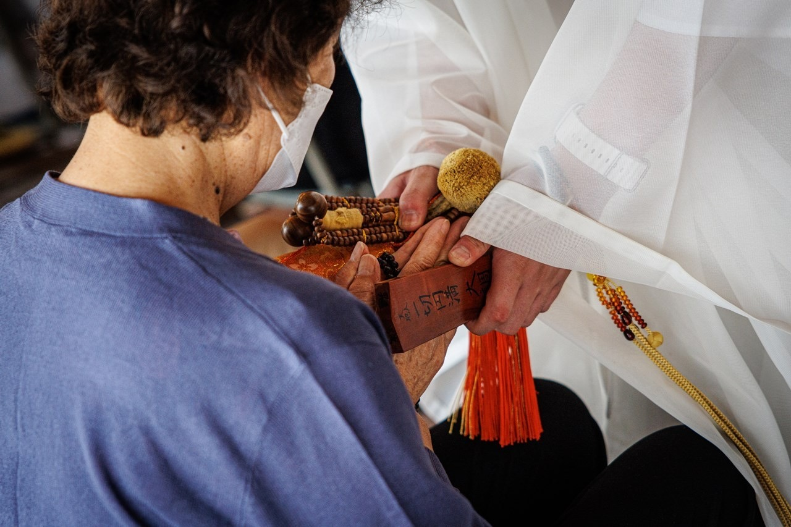

諸願成就・厄除けのご案内

ご祈祷とは、お題目「南無妙法蓮華経」を唱え、法華経の功徳をもって神仏に願いを届け、加護を頂くための儀式です。日蓮宗には、宗祖・日蓮大聖人より受け継がれた「修法（しゅほう）」と呼ばれる伝統的なご祈祷の作法があります。
当山の祈祷殿には、皆さまをお守りする諸尊（御守護神）が祀られています。僧侶が木剣（ぼっけん）を打ち、お題目とお経をお唱えすることで、ご祈祷を願う方の心身を清め、災いを祓い、願い事の成就を後押しいたします。
毎年11月1日から翌年の2月10日までの寒中100日間、千葉県市川市の法華経寺にあります、世界三大荒行に数えられる「大荒行堂」で苦修錬行を積んだ者だけが、相伝される祈祷法であります。
荒行堂の生活は、１日７回の水行と４回の勤行、それ以外読経三昧に入って、食事は一日２食のお粥のみ、自分自身を極限の状態に枯らしてこそ、授かることの出来る祈祷法です。
僧侶が大荒行堂にて写経した撰法華経（せんほけきょう）というお経巻を人々に当て、心の垢である罪障を払い、祈願の成就を祈ります。
お申し込みいただいた方の祈願を立て、お札をお寺の本堂でお預かりし、1年間、毎日欠かさず祈願回向（きがんえこう）を行うものです。皆様と共に、願いの成就を日々祈り続ける特別なご祈願です。
このような方におすすめされています
ご祈祷は、お申し込みから授与品のお渡しまで、概ね以下の流れで執り行います。
| 1. お申し込み | お電話またはお問い合わせフォームより、ご希望の祈願内容・日時をご相談ください。 |
|---|---|
| 2. ご来寺 | 当日、ご予約の時間に祈祷殿へお越しください。 |
| 3. 修法 | 僧侶が祈願主のお名前・願意を奉読し、お題目をお唱えしてご祈祷いたします（約20〜30分）。 |
| 4. 授与品のお渡し | ご祈祷後、御札・御守などの授与品をお渡しいたします。 |
※ ご都合により当山へお越しいただけない場合は、ご遠方ご祈祷（郵送でのお札のお届け）も承っております。お気軽にご相談ください。
← ご祈祷トップへ戻る常に身に付けたり、ご家庭にお祀りいただくことで、神仏の御加護を頂く授与品です。当山では各種お札・お守りをご用意しております。
| 星守り | 九曜星の星周りによる当年の厄から守護します。 |
|---|---|
| 厄除け守り | 厄年、八方塞がりの方に授与します。 |
| 鬼子母神守り | 身体健全、闘病平癒、息災延命、子宝成就、発育増進、試験合格、学業増進の方に授与します。 |
| 日蓮聖人守り | 家内安全、良縁成就、豊作祈願、海上安全、航空安全、作業安全 |
| 大黒守り | 商売繁盛、事業繁栄、社運隆昌の方に授与します。 |
| 交通安全守り | 交通安全の方に授与します。 |
※ 古いお札・お守りは、年末年始や法要の機会にお焚き上げ供養を承っております。
← ご祈祷トップへ戻る皆さまのご事情に応じて、各種ご祈願を承っております。下記以外のご祈願についてもお気軽にご相談ください。
『帯祝い』とも言われ、古くより妊娠五ヶ月目に入った最初の戌の日に腹帯を巻いて安産の無事を願うものであります。
妙傳寺にお祀りされている安産、子育ての神様である鬼子母神像に祈願した御守をお渡ししております。腹帯守りと安産守りを授与します。
子ども達のこれからの健康を願う人生の通過儀式として、健やかな成長を祈願する行事であります。ご家族揃ってお参りください。
新たにお車を購入された時に、車両だけではなく、運転手も一緒に御祈祷をいたします。
交通安全と道中無難、事故を起こさぬよう御祈願致します。交通安全の御札と御守を授与致します。
ご希望に合わせた各種ご祈願を受付ております。
| 家内安全 | 家族が無事に過ごせますように |
|---|---|
| 身体健全 | 体が健康でありますように |
| 闘病平癒 | 病気が治りますように |
| 息災延命 | 長生きできますように |
| 除厄開運 | 厄を除き運気が上がりますように（厄年の方） |
| 除災得幸 | 災いを除き幸福を得られますように（八方塞がりの方） |
| 良縁成就 | 良き人に出会えますように |
| 子宝成就 | 子供が授かりますように |
| 安産成就 | 無事出産できますように |
| 発育成就 | 子供が元気に育ちますように |
| 試験合格 | 志望校に受かりますように |
| 学業増進 | 頭が良くなりますように |
| 商売繁昌 | 商売が繁昌しますように |
| 事業繁栄 | 事業が成功しますように |
| 社運隆昌 | 会社の運気が上がりますように |
| 豊作祈願 | 作物が良く実りますように |
| 交通安全 | 事故にあいませんように |
| 海上安全 | 海上事故にあいませんように |
| 航空安全 | 航空事故にあいませんように |
| 作業安全 | 業務中の事故にあいませんように |